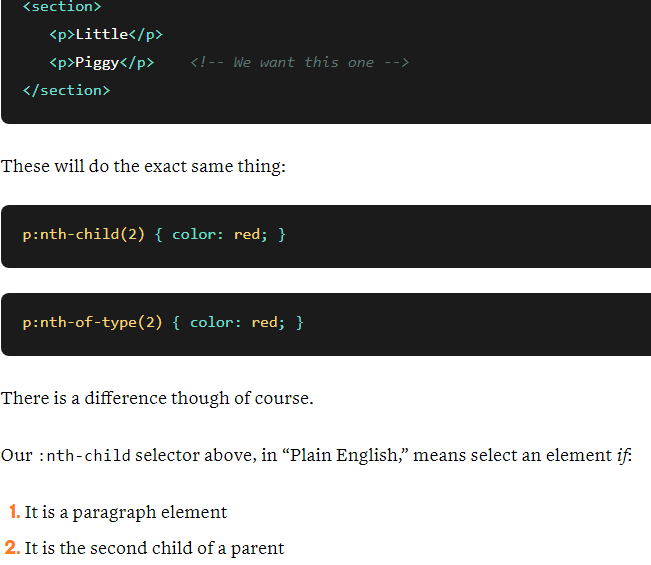

- Difference between nth-child and nth-of-type in css-support with examples As a general rule,if you want to select an interval of a sector regardless of the type of element it is, use nth-child. However if you want to select a specific type only and apply an interval selection from there, use nth-of-type. 